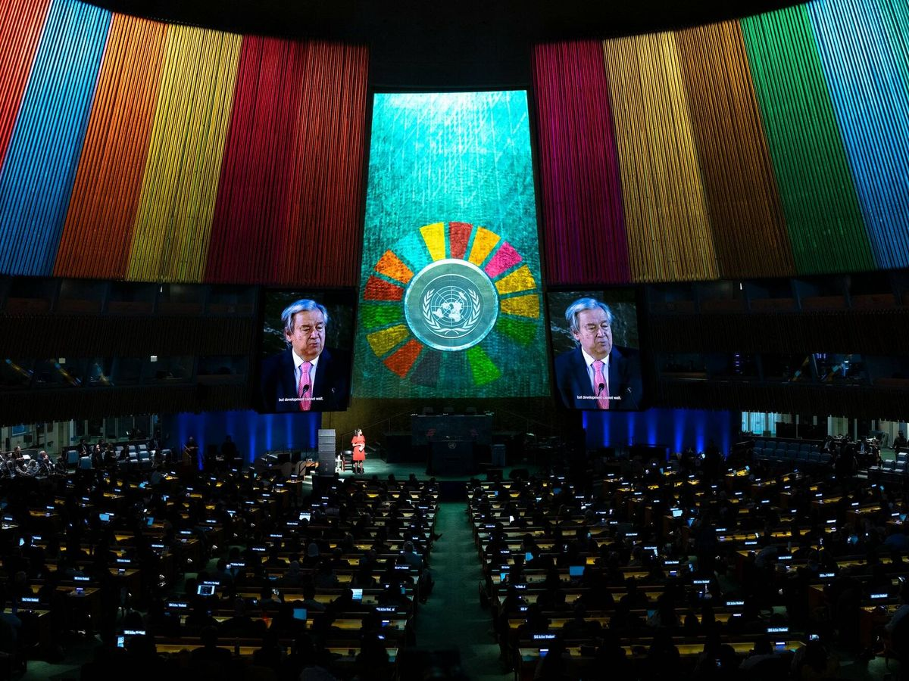
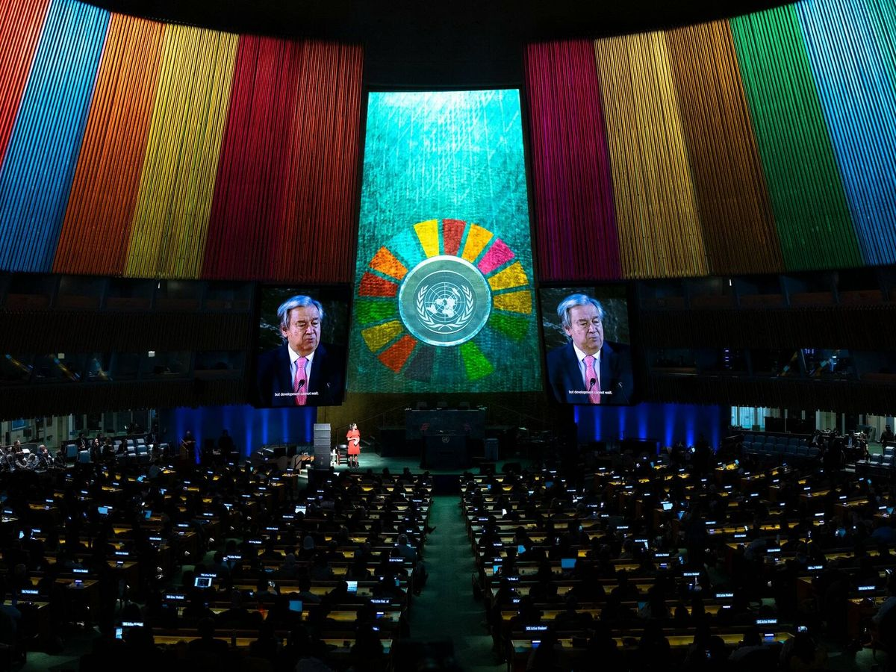

Cumbre Climática Global: Líderes Mundiales Fijan Nuevos Objetivos de Reducción de Emisiones
 

Fecha: 24 de agosto de 2024
La cumbre climática global celebrada en Barcelona ha sido un punto de inflexión en los esfuerzos internacionales para combatir el cambio climático. Más de 100 líderes mundiales se reunieron para discutir y acordar estrategias que puedan mitigar los efectos del calentamiento global. El acuerdo final, alcanzado tras intensas negociaciones, establece objetivos ambiciosos para la reducción de emisiones y refuerza el apoyo a los países en desarrollo.
Detalles del Acuerdo
Objetivos de Reducción de Emisiones
El acuerdo establece que todos los países participantes se comprometen a reducir sus emisiones de gases de efecto invernadero en un 50% para el año 2030 en comparación con los niveles de 2020. Este objetivo refleja una intensificación de los esfuerzos globales para limitar el calentamiento a 1.5 grados Celsius sobre los niveles preindustriales, un umbral crítico para evitar los peores impactos del cambio climático. Los países desarrollados y en desarrollo han acordado adoptar planes nacionales que detallen cómo alcanzarán estas metas.
Financiación para Países en Desarrollo
En un paso significativo para abordar las desigualdades en la capacidad de adaptación al cambio climático, el acuerdo incluye un incremento en la financiación destinada a países en desarrollo. Se ha comprometido una cifra de 100 mil millones de dólares anuales a partir de 2025 para apoyar a las naciones más vulnerables en sus esfuerzos por adaptarse y mitigar el impacto del cambio climático. Esta financiación será crucial para ayudar a estos países a implementar tecnologías limpias y fortalecer su resiliencia.
Transición hacia Energías Renovables
El acuerdo también subraya la necesidad de acelerar la transición hacia energías renovables. Los líderes mundiales han acordado establecer marcos regulatorios más sólidos para fomentar la inversión en energías limpias y reducir la dependencia de los combustibles fósiles. Se prevé la implementación de incentivos para el desarrollo y despliegue de tecnologías limpias, así como la promoción de la eficiencia energética en todos los sectores.
Fomento de la Investigación en Tecnologías Limpias
Como parte del acuerdo, se han comprometido fondos adicionales para la investigación y desarrollo de nuevas tecnologías limpias. El objetivo es avanzar en la innovación para reducir las emisiones y mejorar la sostenibilidad. Los países participantes trabajarán conjuntamente en proyectos de investigación y compartirán avances tecnológicos que puedan ser aplicados a nivel global.
Reacciones y Críticas
Reacciones Positivas
Muchos líderes y organizaciones internacionales han recibido el acuerdo con optimismo. La Secretaria General de la ONU, [Nombre de la Secretaria General], celebró el compromiso global como un avance significativo en la lucha contra el cambio climático, destacando la importancia de la cooperación internacional. Diversas ONG y grupos ambientalistas también han aplaudido los objetivos ambiciosos, aunque han señalado la necesidad de una implementación efectiva.
Críticas y Preocupaciones
Sin embargo, el acuerdo no ha estado exento de críticas. Algunos expertos y activistas han señalado que la falta de mecanismos de supervisión y sanción podría limitar la efectividad de los compromisos. La preocupación principal radica en que, sin medidas concretas para garantizar el cumplimiento de los objetivos, los compromisos podrían no traducirse en acciones reales y efectivas. También se ha cuestionado si la financiación prometida será suficiente para satisfacer las necesidades de los países en desarrollo.
Desafíos en la Implementación
La implementación del acuerdo presentará desafíos significativos. Los países deberán establecer marcos nacionales para medir y reportar sus progresos, lo cual requerirá una capacidad administrativa y técnica que no todos los países poseen actualmente. La cooperación internacional será crucial para superar estos obstáculos y asegurar que los objetivos sean alcanzados de manera efectiva.
Próximos Pasos
Desarrollo de Planes Nacionales
Los países participantes deben desarrollar y presentar planes nacionales detallados para cumplir con los objetivos de reducción de emisiones. Estos planes deberán ser revisados y actualizados periódicamente para asegurar que se mantenga el rumbo hacia las metas establecidas.
Reuniones de Seguimiento
Se han programado reuniones de seguimiento para revisar el progreso hacia los objetivos y ajustar las políticas según sea necesario. La primera revisión está prevista para 2026, momento en el cual se evaluará el avance en la implementación del acuerdo y se discutirán posibles ajustes.
Promoción de la Cooperación Internacional
La cooperación continua entre países será esencial para lograr los objetivos del acuerdo. Se fomentará la colaboración en proyectos internacionales y el intercambio de conocimientos y tecnologías para apoyar la transición hacia un futuro sostenible.